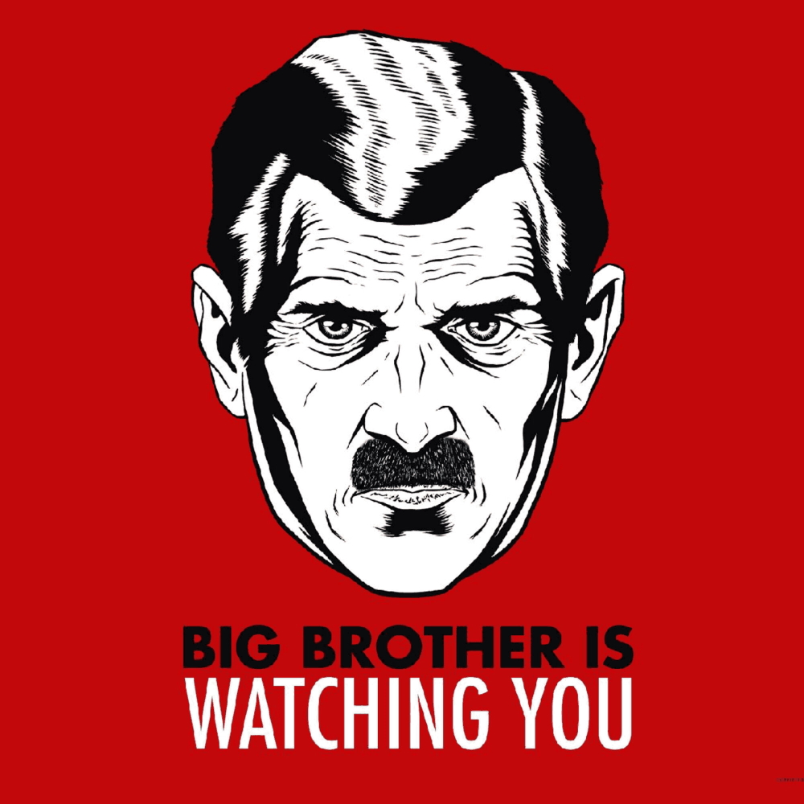

Recent Community Posts
29 April 1985
Dear loyal comrades,
I am writing to inform you that the Eleventh edition of the Newspeak dictionary - the definitive edition - is published. After cutting the language down to the bone, it is finally in its last shape.
As we know it, Newspeak is the official language of Oceania and has been devised to meet the ideological needs of Ingsoc. The A vocabulary consists of words needed for business and everyday life. The B vocabulary consists of words which have been deliberately constructed for political purposes. The C vocabulary is supplementary to the others and consists entirely of scientific and technical terms.
After hours of reconstructing the language to its final form, all members of the party are obliged to get a copy of the new edition of the Newspeak dictionary. It will be mailed to your front door by tomorrow.
This will be the last time we will speak to each other in this manner. By tomorrow, everyone will completely regard each other in a completely different language.
Regards,
Comrade Diada

Look what I just made. Took me 58 hours, hope you like it :) Glory to Oceania!

Happy Hate Week comrades! Tried my best to represent Big Brother! Hail Big Brother!

Remember comrades 'Ignorance is Strength,' do not overthink it.
Please support your local Thought Police. They are trying their best :)

Decided to draw this for Hate Week. Freedom Is Slavery!!
- Julie Parsons